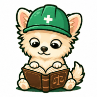
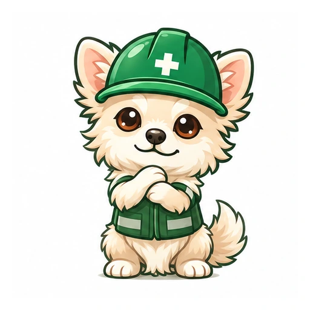
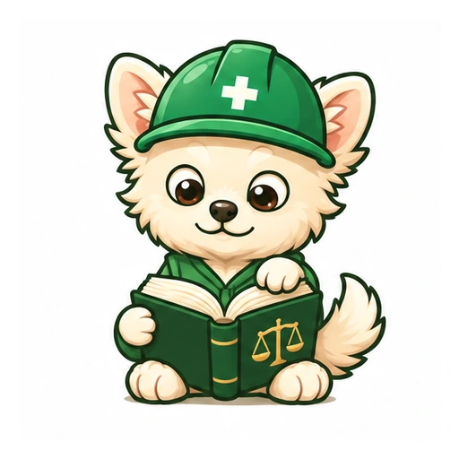
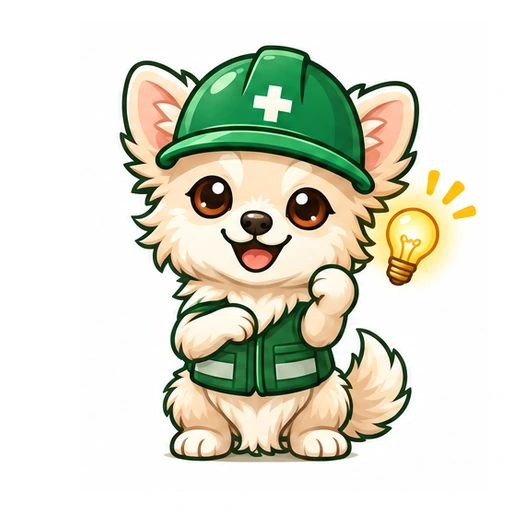
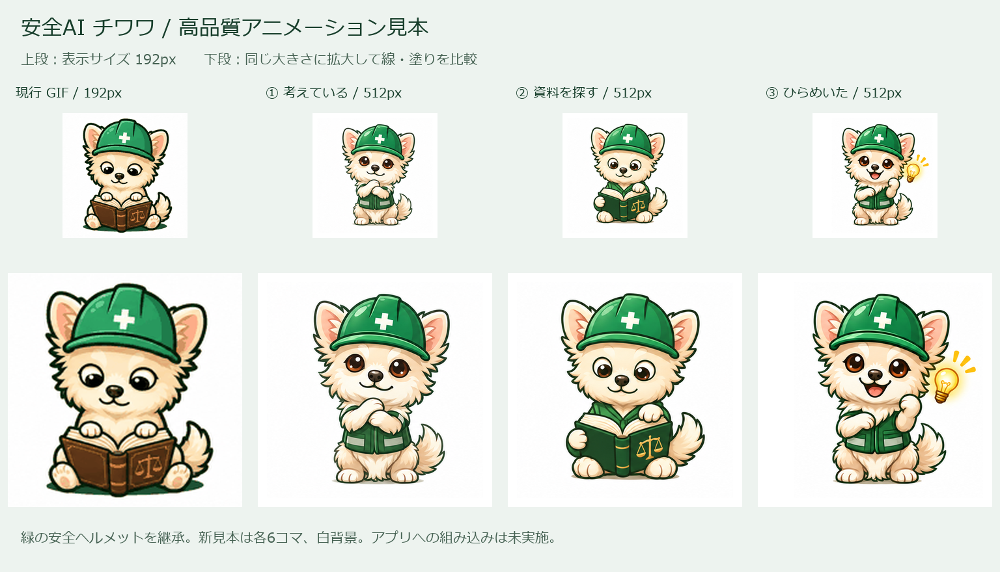

安全AI チワワのアニメーション見本
緑の安全ヘルメットを引き継いだ、3つの待ち時間アニメーション。
現行

192 × 192 / 8コマGIF 156.5 KB
① 考えている

512 × 512 / 6コマ / 1.6秒WebP 152.7 KB / GIF 357.9 KBGIF · 静止画 · 全コマ
② 資料を探している

512 × 512 / 6コマ / 1.6秒WebP 155.9 KB / GIF 364.8 KBGIF · 静止画 · 全コマ
③ ひらめいた

512 × 512 / 6コマ / 1.5秒WebP 169.4 KB / GIF 375.0 KBGIF · 静止画 · 全コマ
線・塗り・陰影の比較
